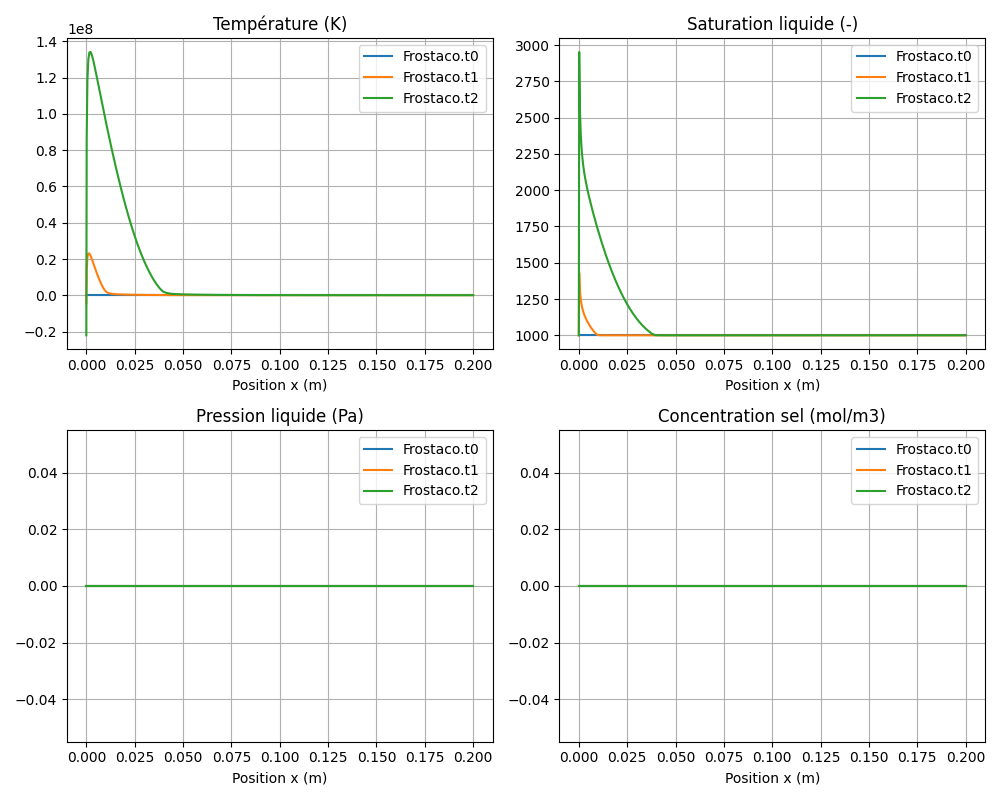

Frostaco Model — Freeze Action in Concrete
Bil model:
src/Models/ModelFiles/Frostaco.cInput file:
doc/mkdocs/PhaseChange/Frostaco/FrostacoModel authors: Q. Zeng, T. Fen-Chong, P. Dangla (Université Gustave Eiffel)
Table of contents
- Context and objective
- Assumptions
- Variables and notation
- Mathematical model
- 4.1 Conservation equations
- 4.2 Flux laws
- 4.3 Ice-liquid thermodynamic equilibrium
- 4.4 Poromechanical coupling
- Boundary and initial conditions
- Test case: one-dimensional freezing (
test_examples/Frostaco/) - Numerical discretization
- Step-by-step file description
- 8.1 Driver file
test_examples/Frostaco/Frostaco - 8.2 Model file
src/Models/ModelFiles/Frostaco.c - Bibliographic references
1. Context and objective
The Frostaco (Frost actions in concrete) model describes thermo-hydro-chemio-mechanical transfers in a cementitious porous medium subjected to freezing and thawing. It evaluates the penetration of the freezing front, the formation of ice in the pore space, and the pressure generated by the volumetric expansion of water transforming into ice and by cryosuction.
The model also incorporates the transport of a dissolved salt (e.g., NaCl or CaCl₂) whose presence modifies the thermochemical activity of water and lowers the freezing temperature. It finds direct applications in the durability of concrete subjected to winter weather (de-icing salts).
2. Assumptions
- Three phases present: solid (cementitious matrix/aggregates), liquid (saline aqueous solution), and ice (pure ice crystals). The medium is assumed saturated with water and ice (\(S_l + S_i = 1\)).
- Liquid phase transfer: flow occurs by advection following Darcy's law. Permeability is reduced by the presence of ice.
- Immobile ice phase: ice forms in situ and does not flow; its deformation and pressure modify the stress state of the solid matrix.
- Salt transport: by advection with liquid water and Fick diffusion slowed by the tortuosity of the pore network. Ice is formed from pure water (ionic exclusion), which concentrates the residual solution.
- Thermodynamics: instantaneous local equilibrium between liquid water and ice, governed by the generalized Kelvin equation (with water activity).
- Poromechanics: the matrix deforms under the effect of pore pressures (liquid and ice) and thermal variations. The Mori-Tanaka model is used to evaluate equivalent poroelastic coefficients (skeleton bulk moduli).
3. Variables and notation
Primary unknowns
To avoid phase-change singularities (appearance/disappearance of ice), the model substitutes the classical pressure variables \(p_l\) and \(p_i\) with a maximum pressure \(p_{\max}\).
| Symbol | Meaning | Unit |
|---|---|---|
| \(p_{\max}\) | Maximum pore pressure: \(\max(p_l, p_i)\) | Pa |
| \(c_s\) | Salt concentration in the pore solution | mol/m³ |
| \(T\) | Temperature | K |
Secondary variables
| Symbol | Meaning |
|---|---|
| \(p_l\) | Liquid phase pressure |
| \(p_i\) | Ice phase pressure |
| \(p_c\) | Ice-water capillary pressure (\(p_c = p_i - p_l\)) |
| \(S_l\) | Liquid water saturation degree |
| \(S_i\) | Ice saturation degree (\(1 - S_l\)) |
| \(a_w\) | Water activity of the solution (depends on \(c_s\) and \(T\)) |
Main physicochemical constants
| Symbol | Typical value | Meaning |
|---|---|---|
| \(V_w\) | \(18 \times 10^{-6}\) m³/mol | Molar volume of liquid water |
| \(V_i\) | \(19.63 \times 10^{-6}\) m³/mol | Molar volume of ice |
| \(S_m\) | \(23.54\) J/(mol·K) | Molar fusion entropy of ice |
| \(T_m\) | \(273\) K | Melting temperature at atmospheric pressure |
| \(R\) | \(8.314\) J/(mol·K) | Ideal gas constant |
| \(\alpha_i\) | \(155 \times 10^{-6}\) K⁻¹ | Volumetric thermal expansion coefficient (ice) |
4. Mathematical model
4.1 Conservation equations
The system consists of three balance equations integrated over the representative elementary volume (REV):
1. Total water mass conservation (liquid + ice):
with
2. Salt mass balance:
with
3. Entropy balance (Thermal):
Total entropy includes the contributions from the solid skeleton, liquid matrix, and ice matrix: \(S_{\text{tot}} = S_{\text{sol}} + m_l s_l + m_i s_i\).
4.2 Flux laws
Darcy flux for the liquid phase:
The relative permeability \(k_{rl}\) depends on capillary pressure and reflects blockage by the ice matrix (e.g., Mualem model).
Salt flux (advection and Fick diffusion):
Tortuosity \(\tau\) varies strongly with the freezing front.
Heat flux (Fourier):
where \(\lambda_{\text{hom}}\) is a mean macroscopic thermal conductivity derived from the solid matrix, water, and ice.
4.3 Ice-liquid thermodynamic equilibrium
The fundamental thermodynamic relation linking pressures is given by the equality of chemical potentials \(\mu_l = \mu_i\):
The water activity \(a_w(T, c_s)\) includes salt effects on cryoscopic depression (simplified Pitzer model or Raoult-Lin law, depending on the ionic strength of CaCl₂ or NaCl).
From this relation, \(p_c = p_i - p_l\) can be derived as a function of temperature and salinity, which in turn gives access to saturations \(S_l\) and \(S_i\) via the retention curve (Van Genuchten model).
4.4 Poromechanical coupling
An evaluation of mechanical stresses caused by ice expansion is performed post-resolution (in the output function), using the Mori-Tanaka scheme to derive equivalent bulk modulus \(K\) and shear modulus \(G\). Volumetric strains combine mechanical pressure contributions and thermal dilatations of hydraulic and elastic origin.
5. Boundary and initial conditions
Imposed variables (Dirichlet / Neumann)
The model expects conditions on the 3 key variables: 1. Thermal depression via a Dirichlet condition or zero flux at the boundary. 2. Salinity evolution or zero flux (impermeable). 3. Pressure \(p_{\max}\) managing water arrivals (drying/rewetting or hydraulic tightness).
6. Test case: one-dimensional freezing
The Frostaco/ directory contains an input file (Frostaco) representative of the cooling of a concrete specimen or wall using the material parameters defined internally.
Simulation parameters
| Parameter | Value |
|---|---|
| Porosity \(\phi\) | 0.20 |
| Permeability \(k_{\text{int}}\) | \(5 \times 10^{-21}\) m² |
| Solid heat capacity \(C_s\) | \(2 \times 10^6\) J/m³/K |
| Solid thermal conductivity \(\lambda_s\) | 1.0 W/m/K |
| Matrix bulk modulus \(K_s\) | 31.8 GPa |
| Matrix shear modulus \(G_s\) | 19.1 GPa |
| Geometric examples | 1D domain 20 cm, 100 cells |
| Retention curve | Van-Genuchten with \(p_0 = 0.7\) MPa, \(m = 0.4\) |
Expected physics in the test case
The simulation drives the progressive application of a thermal protocol and tracks the fields \(p_{\max}, T, c_s\) over the 1D geometry, reproducing the propagation of the freezing front and the fluid displacements caused by the thermokinetic "pump" of ice.
Test results and physical comments
A typical execution of the Frostaco model illustrates the following sequential behavior:

- Freezing Propagation: Upon cooling (e.g., from 283 K to 253 K on one face), the model predicts ice front advancement from the free boundary. At every point reaching appropriate negative temperatures, the unknown
p_maxdictates the appearance ofp_i(ice pressure) dominant overp_l. - Cryosuction: The solidification of water reduces liquid pore pressure, creating a very strong suction gradient attracting nearby unfrozen water toward the front (cryogenic pumping).
- Salt overconcentration: Since water incorporates into the ice crystal while excluding salt, the front generates a \(c_s\) overconcentration (expulsion effect visible in the
.t1and.t2result files) which serves to stabilize the transition by inhibiting subsequent freezing at the same temperature. - Poro-thermal impact: As water density decreases during glaciation (volume swelling by +9%), the mass balance leads to rising poroelastic tensions in the output matrix, producing macroscopic pressures evaluated via Mori-Tanaka at damaging megapascal (MPa) levels for concrete.
7. Numerical discretization
The Bil platform relies here on a Cell-centered Finite Volume discretization (FVM.h). The model is fully implicit for mass conservation, entropy, and salt concentration.
Derivatives for assembling the Jacobian matrix (Newton-Raphson) are computed numerically and analytically at the flux term level, through the coupling of variables (M_TOT, M_SALT, S_TOT, W_TOT, W_SALT, W_THE).
8. Step-by-step file description
8.1 Driver file Frostaco
This file fully defines the test case simulation declaratively. Here is its detailed structure step by step:
- Geometry / Mesh: Initializes a geometric coordinate problem via a simple mesh of 100 elements along a 0.2 m segment.
- Material: Specifies the model type to load (
Model = Frostaco) and defines all material parameters (conductivities, porosity, mechanical moduli). It calls the curvesCurves_log = cement_logintegrating Van-Genuchten and Mualem laws for the liquid-ice thermodynamics. - Fields: Defines 8 base fields (reference values) allowing fixed constants to be associated with initial or boundary condition laws (e.g., 283 K for ambient temperature via field 1, 1000 mol/m³ for salt via field 8).
- Initialization: Specifies microscopic conditions at \(t=0\) in the domain (
Region = 2). The 3 primary unknowns (tem,c_s,p_max) are parameterized from the pre-referenced fields. - Functions: Introduces mathematical profiles of spatial or temporal variation. The freezing thermal dimension of the specimen is driven by the function defining an evolution from 273 K to 253 K over a given time interval.
- Boundary Conditions: Aligns model boundaries (e.g.,
Region = 1) with the expected temperature evolution and impermeability to transport by other variables (Neumann and Dirichlet conditions). - Dates & Time Steps: Configures Bil's adaptive time step engine. The
Dtiniline dictates the initialization step (very small), andDatesmanages at which time markers results must be written to disk. - Objective Variations: Serves as maximum tolerance between two iterative steps. The solver will recalibrate computations if, for example, the thermal variation
temexceeds a defined margin step.
8.2 Model file src/Models/ModelFiles/Frostaco.c
The C source file embeds all the coupled physics of the Frostaco law, interfacing with the Bil analytical core. Here are its main functional processing blocks (computation steps):
- Initialization and Constants:
- Definition of the 3 primary equations (
mass,salt,the) associated with the key unknowns (p_max,c_s,tem). -
The
ComputePhysicoChemicalProperties()function pre-computes absolute water quantities (density, viscosity), molar salt activity, and ice crystal fusion entropy in this physical context. -
Nodal evaluation (
ComputeVariablesandComputeSecondaryVariables): - The logical structure is designed to split
p_maxinto the limiting liquid pressurep_land ice pressurep_i. The method numerically verifies thermodynamic feasibility via the generalized Kelvin law, thus avoiding physically imposing ice degrees in a moderately warm medium. -
Local parameters such as
rho_i,rho_salt, entropy modules_tot, solution viscosity, and microscopic saturation degree (sd_lvia the retention curve) derive purely as secondary state variables. -
Exchange Fluxes (
ComputeTransferCoefficientsand associated fluxes): - Constructs the hydrodynamic mobilities and conductance tortuosities enabling advection of liquid water (Darcy efficiency loss by obstructive ice).
-
Generates the exact nodal fluxes (
w_lfor liquid,w_saltfor transport flux combined with advection, andw_thethe carried heat). -
Jacobian and Numerical Balance (
ComputeResiduandTangentCoefficients): - The
Residuvector computes the numerical error to constrain the 3 conservation principles. The balance is built via the core functionFVM_ComputeMassAndFluxResidu(..). -
TangentCoefficientsnumerically assembles (via targeted finite differences and \(10^{-4}\) state vector perturbations) the entire sensitivity Jacobian to feed Newton-Raphson resolution. -
Post-computation Deformations (
ComputeOutputs): - The residual hydrothermal properties and interstitial expansion caused by the ice phase model effective strains within the cementitious matrix. This block reconstructs the constrained local integration poroelastic model according to the Mori-Tanaka scheme, returning the estimated cracking increment on the final physical output.
9. Bibliographic references
- Coussy, O. (2005). Poromechanics of freezing materials. Journal of the Mechanics and Physics of Solids, 53(8), 1689–1718. — Rigorous poromechanical thermodynamic framework for pore medium freezing/thawing and use of the Kelvin relation on ice.
- Zeng, Q., Fen-Chong, T. & Dangla, P. (2012). Water freezing in cement paste: observation and calculation. Advances in civil engineering materials, 1(1), 1–16.
- Zeng, Q., Fen-Chong, T. & Dangla, P. (2014). Poromechanics model of freezing/thawing phenomena in porous geomaterials: application to concrete. International Journal for Numerical and Analytical Methods in Geomechanics. — Primary basis for the formalism of the present
Frostacomodel. - Mori, T., & Tanaka, K. (1973). Average stress in matrix and average elastic energy of materials with misfitting inclusions. Acta metallurgica, 21(5), 571–574. — Homogenization assumptions to determine the elasticity tensor with ice crystals included in pores.
- Lin, S. T., & Lee, H. (1993). Hydration-based thermodynamic model for phase equilibria in aqueous solutions. AIChE Journal, 39(6), 1064–1075. — Modeling of salt activity used and coded in the water activity equilibrium function (\(Ca^{2+}\), \(Na^+\)).